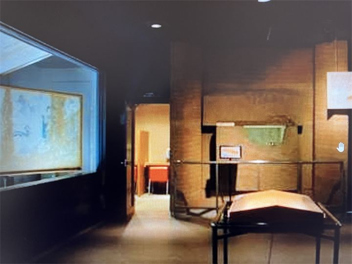

極彩色壁画の復元展示
高松塚古墳で発見された壁画を忠実に再現し、飛鳥時代の美しい彩色や表現を学べます。

高松塚壁画館は、高松塚古墳から発見された極彩色壁画の模写や復元模型を展示する施設です。 石室内部に描かれた男女群像や四神、星宿図など、飛鳥時代を代表する壁画の魅力を分かりやすく学ぶことができます。 高松塚古墳と合わせて訪れることで、古代飛鳥の歴史をより深く感じられるスポットです。
| 営業時間 | 9:00〜17:00（入館16:30まで） |
|---|---|
| 定休日 |
12月29日〜1月3日 4月・7月・11月・2月の第2月曜日 （祝日の場合は翌平日） |
| 料金 |
大人300円 高校・大学生130円 小中学生70円 |
| 所要時間 | 20〜30分 |
| 駐車場 | 国営飛鳥歴史公園館駐車場 |
| アクセス | 近鉄飛鳥駅から徒歩15分 |
| 地図 | 地図はこちら |
高松塚古墳で発見された壁画を忠実に再現し、飛鳥時代の美しい彩色や表現を学べます。

壁画だけでなく、古墳の構造や発見当時の資料なども展示されています。
高松塚古墳は、昭和47年の発掘調査によって極彩色の壁画が発見され、大きな注目を集めました。 壁画には男女群像、四神、星宿図などが描かれており、当時の服装や文化を知る貴重な資料となっています。 高松塚壁画館では、保存のため公開が制限されている壁画を、復元模型や模写を通して見ることができます。